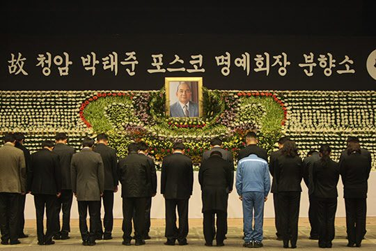
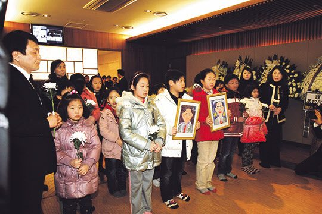
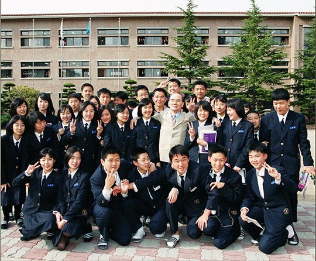

연재일 2015-07-03출처 조선일보 프리미엄조선 연재
<①편에서 계속>
수술 후 12일째, 11월 22일. 드디어 외부인 면회가 허락되었다. 포스코 초창기부터 필생에 걸쳐 동고동락해온 황경로, 안병화, 박득표….
“왼쪽 폐가 완전히 없어졌어.”
환자의 유쾌한 목소리, 동지들과 후배들의 웃음소리. 병실은 넘치는 인정(人情)으로 마냥 따뜻했다. 바람은 자고 볕살은 오진 어느 봄날의 산모퉁이 양달 같았다. 아, 그러나 그것이 신(神)이나 자연이 박태준에게 허락한 마지막 인간적인 시간이었을까.
이튿날 아침에 환자의 몸에서 급격한 변화가 발생했다. 오한과 발열, 혈압과 맥박 상승. 담당의가 다시 그를 중환자실로 옮겼다. 급성폐렴이 덮친 것이었다. 남은 오른쪽 폐가 그놈을 극복할 것인가, 그만 지쳐서 그놈에게 먹힐 것인가. 싸움은 길었다. 호전과 악화를 반복했다. 처절한 사투였다.
12월 13일 오후 5시 20분, 국내외 언론들이 긴급 뉴스를 보도했다. 박태준 타계, 향년 만84세. 빈소는 연세대 세브란스병원 장례식장, 장례는 닷새의 사회장. 그리고 중지를 모아서 장지는 서울 동작동 국립 현충원 국가유공자 묘역으로 결정했다.

한국의 모든 언론이 ‘청암 박태준 추모 보도’를 마련했다. 해외의 여러 언론도 그의 생애와 죽음을 비중 있게 다루었다. 과연 박태준의 죽음을 한국 시민사회는 어떻게 받아들였을까? 2012년 1월 5일 ≪동아일보≫ 권순활의 칼럼이 압축적으로 묘사해준다.
<박태준이 작고하고 영결식 날까지 닷새 동안 일반 시민을 포함해 각계 조문객 8만7천여 명이 서울, 포항, 광양 등 전국 일곱 곳의 분향소를 찾았다. 우리 사회는 “세종대왕이 다시 와도 두 손 들고 떠날지 모른다”라는 자조의 농담까지 나올 만큼 갈등과 반목이 심하다. 김수환 추기경, 성철 스님, 한경직 목사 등 극소수 원로를 빼면 이번만큼 범국민적 추모 열기가 뜨거웠던 적은 드물었다.>

만약 포스코 대성공에 기여한 박태준의 공로가 아무리 적어도 1%는 된다고 인정한 국가(정부)가 그에게 포스코 주식들 중 공로주로 1%만 줬더라면, 그는 수천억 원을 소유한 재벌급 대부호로 살았을 것이다. 그러나 그는 공로주를 바라지도 않았고 한 주도 받지 않았다. 포스코가 늘 세계일류이기를 희원할 따름이었다. 인생의 황혼에도 놓지 못했던 그가 생전에 풀지 못한 개인적 소망은 둘이었다.
하나는 북한의 원산이나 함흥 어디쯤에 포스코와 같은 제철소를 포스코의 자금과 기술로 세우는 것.
“내가 늙은 몸을 끌고 가서라도 제철소를 지어 근대화의 기반을 놓아줄 텐데. 기술자들은 인민군대에서 천 명쯤 골라서 포항 광양에 데려다가 훈련시키면 돼. 자금? 걱정 없어. 포스코 신인도면 빌려줄 은행이 줄을 서 있어. 왜 평양이 문을 못 여나? 제철소뿐이야? 근대화 교과서가 다 있어. 여기, 여기 말이야.”
이때, 박태준은 오른쪽 검지로 이마를 쿡쿡 찌르며 흥분했다.
또 하나는 노벨과학상을 받은 한국인에게 한턱을 내는 것.
“일본과 축구해서 우리 대표팀이 2:0으로만 져도 난리를 치는 우리가 왜 노벨과학상에서는 17:0이 되어도 무신경한 거야? 뭔가 크게 잘못됐어. 교육부터 바로 돼야 해. 교육의 비교우위가 중요해. 교육이 일본에 앞서야 일본을 앞서는 거고 극일도 하게 되는 거야.”
이때, 박태준은 주먹을 쥐며 심각했다.
